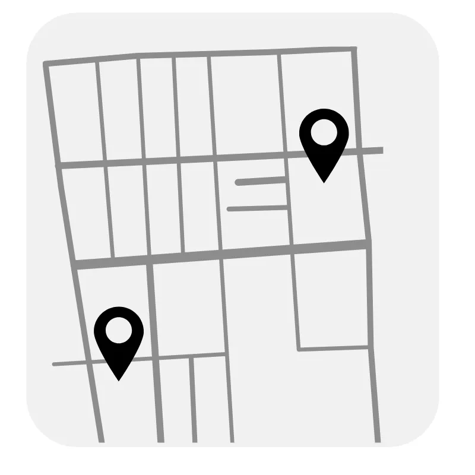
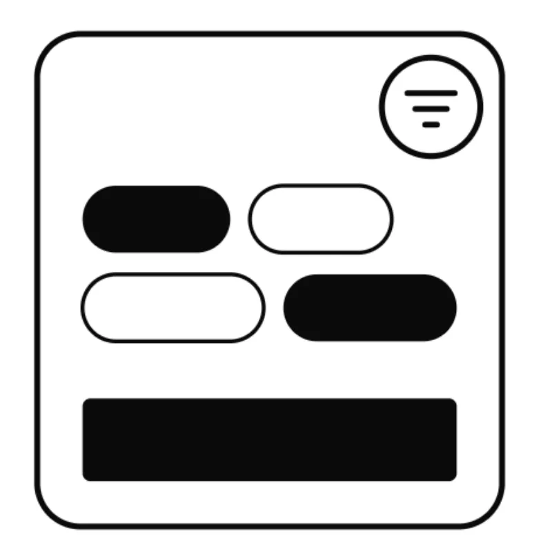
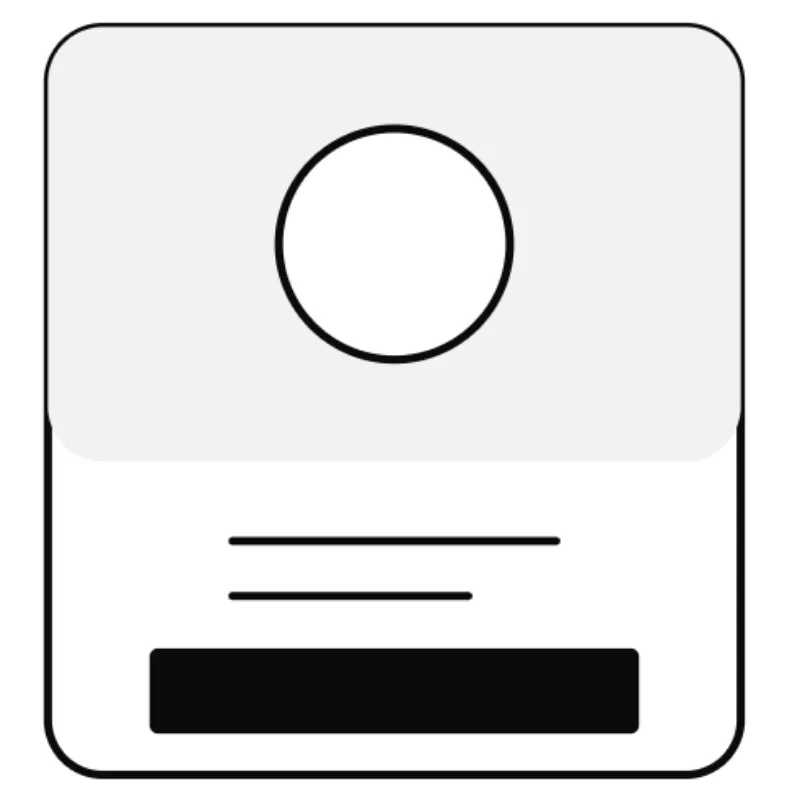
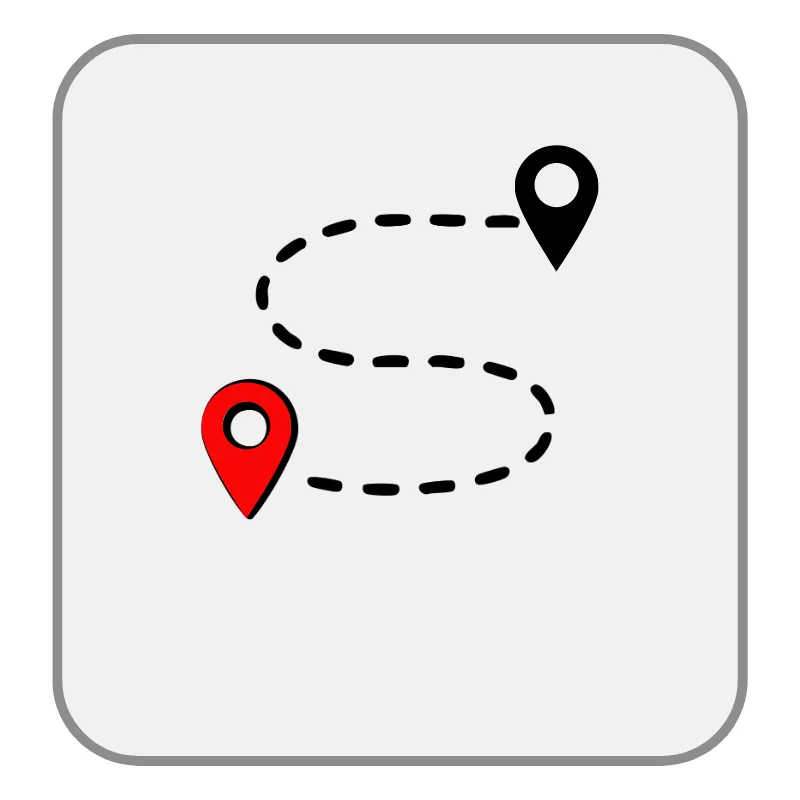
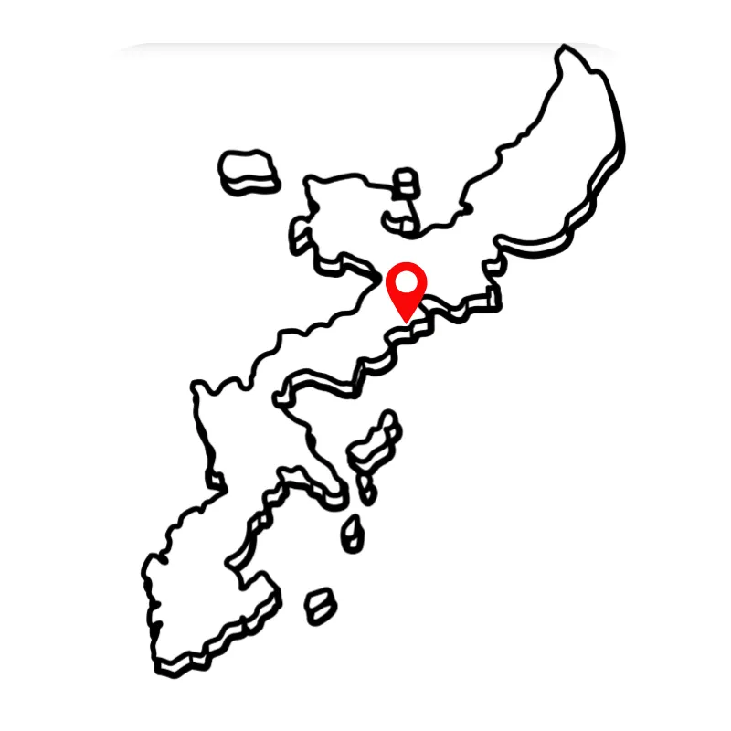

気になるピンを押すと、地元の人がおすすめするスポットを確認できます。

右上のボタンから、カテゴリや食べたいものなどを選べます。

写真や紹介を確認し、Googleマップから詳しい場所を開けます。

左上のロゴボタンを押すと、現在地を地図上に表示できます。

まずは金武町周辺から。これから沖縄本島全域へ少しずつ広げていきます。
OKINAMAP
該当するスポット：0件
この条件に合うスポットはありません。条件を減らしてみてください。
config.js